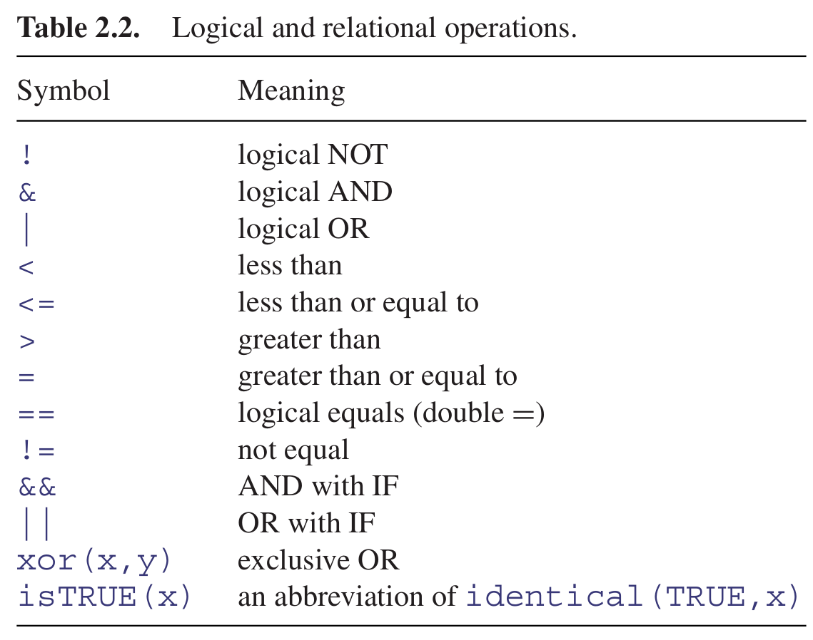
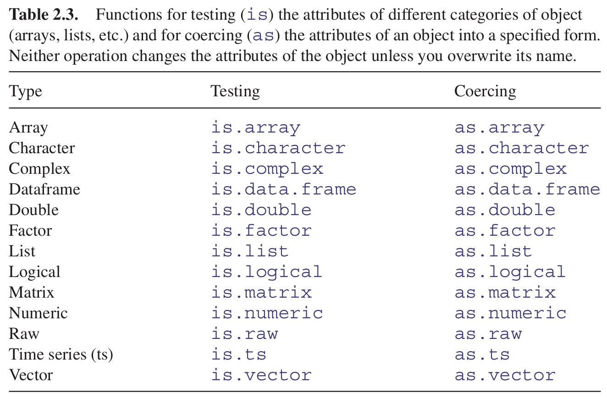

2.6 R Basic Data types
In the previous examples we worked with numbers, but variables could be assigned other types of information. There are four basic types:
Integers: integer numbers. If you type an integer in R, as before 3 or 4, it will usually be stored as a double unless explicitly defined;
Doubles: real numbers;
Logicals or Booleans: corresponding to
TRUEandFALSE, also abbreviated asTandFrespectively;Characters: strings of text surrounded by
"(for example"hi") or by'(for example ‘by’);Dates: date-time expressions in R.
2.6.1 Integers
Integer vectors exist so that data can be passed to C or Fortran code which expects them, and so that small integer data can be represented exactly and compactly. The range of integers is from −2 000 000 000 to + 2 000 000 000 (-2*10ˆ9 to +2*10ˆ9, which R could portray as -2e+09 to 2e+09).
Be careful. Do not try to change the class of a vector by using the integer function. Here is a numeric vector of whole numbers that you want to convert into a vector of integers:
x = c(5,3,7,8)
is.integer(x)## [1] FALSEis.numeric(x)## [1] TRUETo coerce a numeric vector to be an integers vector we have to use the as.integer function like this:
x = c(5,3,7,8)
x = as.integer(x)
is.integer(x)## [1] TRUEThe integer function works as trunc when applied to real numbers, and removes the imaginary part when applied to complex numbers:
as.integer(5.7)## [1] 5as.integer(5.7 -3i)## Warning: imaginary parts discarded in coercion## [1] 52.6.2 Integer vs. Double
The two most common numeric classes used in R are integer and double (for double precision floating point numbers). R automatically converts between these two classes when needed for mathematical purposes. As a result, it’s feasible to use R and perform analyses for years without specifying these differences.
By default, when you create a numeric vector using the c() function it will produce a vector of double precision numeric values. To create a vector of integers using c() you must specify explicity by placing an L directly after each number.
dbl_var = c(1, 2.5, 4.5)
dbl_var## [1] 1.0 2.5 4.5int_var = c(1L, 6L, 10L)
int_var## [1] 1 6 10To check whether a vector is made up of integer or double values:
typeof(dbl_var)## [1] "double"typeof(int_var)## [1] "integer"By default, if you read in data that has no decimal points or you create numeric values using the x = 1:10 method the numeric values will be coded as integer. If you want to change a double to an integer or vice versa you can specify one of the following:
# integers to doubles
as.double(int_var)## [1] 1 6 10# doubles to integers
as.integer(dbl_var)## [1] 1 2 42.6.3 Logical operators
A crucial part of computing involves asking questions about things. Is one thing bigger than other? Are two things the same size? Questions can be joined together using words like ‘and’ ‘or,’ ‘not.’ Questions in R typically evaluate to TRUE or FALSE but there is the option of a ‘maybe’ (when the answer is not available, NA). In R, < means ‘less than,’ > means ‘greater than,’ and ! means ‘not’ (see Table 2.2).

You can use T for TRUE and F for FALSE, but you should be aware that T and F might have been allocated
as variables. So this is obvious:
TRUE == FALSE## [1] FALSET == F## [1] FALSEThis, however, is not so obviours:
T = 0
T == FALSE## [1] TRUEF = 1
TRUE == F## [1] TRUEBut now, of course, T is not equal to F:
T != F## [1] TRUETo be sure, always write TRUE and FALSE in full, and never use T or F as variable names.
Maybe you noticed in the last code chunk that, in R, TRUE is coded as 1 and FALSE as 0:
TRUE == 1## [1] TRUEFALSE == 0## [1] TRUELet’s remove the T and F variables to avoid future errors:
rm(list = c(T,F))## Warning in rm(list = c(T, F)): object '0' not found## Warning in rm(list = c(T, F)): object '1' not found2.6.4 Real numbers equality
You need to be careful in programming when you want to test whether or not two computed numbers are equal. R will assume that you mean ‘exactly equal,’ and what that means depends upon machine precision. Most numbers are rounded to an accuracy of 53 binary digits.
Typically therefore, two floating point numbers will not reliably be equal unless they were computed by the same algorithm, and not always even then. You can see this by squaring the square root of 2: surely these values are the same?
x = sqrt(2)
x * x == 2## [1] FALSEIn fact, they are not the same. We can see by how much the two values differ by subtraction:
x * x - 2## [1] 4.440892e-16So how do we test for equality of real numbers? The best advice is not to do it. Try instead to use the alternatives ‘less than’ with ‘greater than or equal to,’ or conversely ‘greater than’ with ‘less than or equal to.’ Then you will not go wrong. Sometimes, however, you really do want to test for equality. In those circumstances, do not use double equals to test for equality, but employ the all.equal function instead.
x = 0.3 - 0.2
y = 0.1
x == y## [1] FALSEall.equal(x,y)## [1] TRUEWARNING: Do not use all.equal directly in if expressions. Either use isTRUE(all.equal( ....))
2.6.5 Logical arithmetic
Arithmetic involving logical expressions is very useful in programming and in selection of variables. The key thing to understand is that logical expressions evaluate to either true or false (represented in R by TRUE or FALSE), and that R can coerce TRUE or FALSE into numerical values: 1 for TRUE and 0 for FALSE. Suppose that x is a sequence from 0 to 6 like this:
x = 0:6Now we can ask questions about the contents of the vector called x. Is x less than 4?
x < 4## [1] TRUE TRUE TRUE TRUE FALSE FALSE FALSEThe answer is yes for the first four values (0, 1, 2 and 3) and no for the last three (4, 5 and 6).
Two important logical functions are all and any. They check an entire vector but return a single logical value: TRUE or FALSE. Are all the x values bigger than 0?
all(x>0)## [1] FALSENo. The first x value is a zero. Are any of the x values negative?
any(x<0)## [1] FALSENo. The smallest x value is a zero.
We can use the answers of logical functions in arithmetic. We can count the true values of (x<4), using sum:
sum(x<4)## [1] 4We can multiply (x<4) by other vectors:
(x<4) * runif(7)## [1] 0.3638331 0.9908843 0.4828548 0.2473120 0.0000000 0.0000000 0.00000002.6.6 Characters
In R, character strings are defined by double quotation marks:
a = "abc"
b = "123"Numbers can be coerced to characters (as in b above), but non-numeric characters cannot be coerced to numbers:
as.numeric(a)## Warning: NAs introduced by coercion## [1] NAas.numeric(b)## [1] 123One of the initially confusing things about character strings is the distinction between the length of a character object (a vector), and the numbers of characters (nchar) in the strings that comprise that object. An example should make the distinction clear:
pets = c("cat","dog","gerbil","terrapin")Here, pets is a vector comprising four character strings:
length(pets)## [1] 4and the individual character strings have 3, 3, 6 and 8 characters, respectively:
nchar(pets)## [1] 3 3 6 8When first defined, character strings are not factors:
class(pets)## [1] "character"is.factor(pets)## [1] FALSEWe have to coerce this variable to convert it into a factor
pets = as.factor(pets)
is.factor(pets)## [1] TRUE2.6.7 Characters: letters vectors
There are built-in vectors in R that contain the 26 letters of the alphabet in lower case (letters) and in upper case (LETTERS):
letters## [1] "a" "b" "c" "d" "e" "f" "g" "h" "i" "j" "k" "l" "m" "n" "o" "p" "q" "r" "s"
## [20] "t" "u" "v" "w" "x" "y" "z"LETTERS## [1] "A" "B" "C" "D" "E" "F" "G" "H" "I" "J" "K" "L" "M" "N" "O" "P" "Q" "R" "S"
## [20] "T" "U" "V" "W" "X" "Y" "Z"To discover which number in the alphabet the letter n is, you can use the which function like this:
which(letters == "n")## [1] 14For the purposes of printing you might want to suppress the quotes that appear around character strings by default. The function to do this is called noquote:
noquote(letters)## [1] a b c d e f g h i j k l m n o p q r s t u v w x y z2.6.8 Characters: Pasting strings together
You can amalgamate individual strings into vectors of character information:
c(a,b)## [1] "abc" "123"This shows that the concatenation produces a vector of two strings. It does not convert two 3-character strings into one 6-character string. The R function to do that is paste:
paste(a,b,sep = "")## [1] "abc123"The third argument, sep="", means that the two character strings are to be pasted together without any separator between them: the default for paste is to insert a single blank space, like this:
paste(a,b)## [1] "abc 123"Notice that you do not lose blanks that are within character strings when you use the sep="" option in
paste.
paste(a,b," a longer phrase containing blanks",sep="")## [1] "abc123 a longer phrase containing blanks"If one of the arguments to paste is a vector, each of the elements of the vector is pasted to the specified character string to produce an object of the same length as the vector:
d = c(a,b,"new")
e = paste(d, "a longer phrase containing blanks")
e## [1] "abc a longer phrase containing blanks"
## [2] "123 a longer phrase containing blanks"
## [3] "new a longer phrase containing blanks"2.6.9 Characters: Extracting parts of strings
We being by defining a phrase:
phrase = "the quick brown fox jumps over the lazy dog"The function called substr is used to extract substrings of a specified number of characters from within a character string. In the next example we are extracting the first 20 characters from phrase object:
substr(phrase, 1, 20)## [1] "the quick brown fox "The second argument in substr is the number of the character at which extraction is to begin (in this case the first), and the third argument is the number of the character at which extraction is to end (in this case, the 20th).
2.6.10 Characters: Counting things within strings
Counting the total number of characters in a string could not be simpler; just use the nchar function directly, like this:
nchar(phrase)## [1] 43So there are 43 characters including the blanks between the words. To count the numbers of separate individual characters (including blanks) you need to split up the character string into individual characters (43 of them), using strsplit like this:
strsplit(phrase, split = "")## [[1]]
## [1] "t" "h" "e" " " "q" "u" "i" "c" "k" " " "b" "r" "o" "w" "n" " " "f" "o" "x"
## [20] " " "j" "u" "m" "p" "s" " " "o" "v" "e" "r" " " "t" "h" "e" " " "l" "a" "z"
## [39] "y" " " "d" "o" "g"The split = "" argument is for determine the character we are going to use to split the entire object. If we use a blank space instead we can separate the string in all the different words:
strsplit(phrase, split = " ")## [[1]]
## [1] "the" "quick" "brown" "fox" "jumps" "over" "the" "lazy" "dog"The table function can then be used for counting the number of occurrences of each of the characters:
table(strsplit(phrase, split = ""))##
## a b c d e f g h i j k l m n o p q r s t u v w x y z
## 8 1 1 1 1 3 1 1 2 1 1 1 1 1 1 4 1 1 2 1 2 2 1 1 1 1 1This demonstrates that all of the letters of the alphabet were used at least once within our phrase, and that there were eight blanks within the string called phrase. This suggests a way of counting the number of words in a phrase, given that this will always be one more than the number of blanks (so long as there are no leading or trailing blanks in the string):
nwords = 1+table(strsplit(phrase, split = ""))[1]
nwords##
## 9Another solution is to sum all the elements in the table splitting the phrase with a blank space:
sum(table(strsplit(phrase, split = " ")))## [1] 92.6.11 Characters: Upper- and lower-case text
It is easy to switch between upper and lower cases using the toupper and tolower functions:
toupper(phrase)## [1] "THE QUICK BROWN FOX JUMPS OVER THE LAZY DOG"tolower(toupper(phrase))## [1] "the quick brown fox jumps over the lazy dog"2.6.12 Dates and times
The measurement of time is highly idiosyncratic. Successive years start on different days of the week. There are months with different numbers of days. Leap years have an extra day in February. Americans and Britons put the day and the month in different places: 3/4/2006 is March 4 for the former and April 3 for the latter.
All these things mean that working with dates and times is extremely complicated. Fortunately, R has a robust system for dealing with this complexity.
To see how R handles dates and times, have a look at Sys.time():
Sys.time()## [1] "2022-01-28 12:52:55 CET"This description of date and time is strictly hierarchical from left to right: the longest time scale (years) comes first, then month, then day, separated by hyphens, then there is a blank space, followed by the time, with hours first (using the 24-hour clock), then minutes, then seconds, separated by colons. Finally, there is a character string explaining the time zone (CET stands for Central Europe Time)
This representation of the date and time as a character string is user-friendly and familiar, but it is no good for calculations. For that, we need a single numeric representation of the combined date and time. The convention in R is to base this on seconds (the smallest time scale that is accommodated in Sys.time)
The baseline for expressing today’s date and time in seconds is 1 January 1970:
as.numeric(Sys.time())## [1] 1643370775This is fine for plotting time series graphs, but it is not much good for computing monthly means (e.g. is the mean for June significantly different from the July mean?) or daily means (e.g. is the Monday mean significantly different from the Friday mean?).
To answer questions like these we have to be able to access a broad set of categorical variables associated with the date: the year, the month, the day of the week, and so forth. To accommodate this, R uses the POSIX system for representing times and dates:
class(Sys.time())## [1] "POSIXct" "POSIXt"You can think of the class POSIXct, with suffix ‘ct,’ as continuous time (i.e. a number of seconds), and
POSIXlt, with suffix ‘lt,’ as list time (i.e. a list of all the various categorical descriptions of the time,
including day of the week and so forth). It is hard to remember these acronyms, but it is well worth making
the effort. Naturally, you can easily convert to one representation to the other:
time.list = as.POSIXlt(Sys.time())
unlist(time.list)## sec min hour mday
## "55.2355105876923" "52" "12" "28"
## mon year wday yday
## "0" "122" "5" "27"
## isdst zone gmtoff
## "0" "CET" "3600"Here you see the nine components of the list. The time is represented by the number of seconds (sec), minutes (min) and hours (on the 24-hour clock). Next comes the day of the month (mday, starting from 1), then the month of the year (mon, starting at January = 0), then the year (starting at 0 = 1900). The day of the week (wday) is coded from Sunday = 0 to Saturday = 6. The day within the year (yday) is coded from 0 = January 1. Finally, there is a logical variable isdst which asks whether daylight saving time is in operation (0 = FALSE in this case). The ones you are most likely to use include year (to get yearly mean values), mon (to get monthly means) and wday (to get means for the different days of the week).
2.6.13 Dates and times: Reading time data from files
It is most likely that your data files contain dates in Excel format, for example 03/09/2014 (a character string showing month/day/year separated by slashes).
df = read.csv(file = "Data/boulder-precip.csv")
attach(df)
head(df)## ID DATE PRECIP TEMP
## 1 756 8/21/13 0.1 55
## 2 757 8/26/13 0.1 25
## 3 758 8/27/13 0.1 NA
## 4 759 9/1/13 0.0 -999
## 5 760 9/9/13 0.1 15
## 6 761 9/10/13 1.0 25To convert a factor or a character string into a POSIXlt object, we employ an important function called ‘strip time,’ written strptime.
2.6.14 Dates and times: The strptime function
To convert a factor or a character string into dates using the strptime function, we provide a format statement enclosed in double quotes to tell R exactly what to expect, in what order, and separated by what kind of symbol. For our present example we have day (as two digits), then slash, then month (as two digits), then slash, then year (without the century, making two digits).
Rdate = strptime(DATE, "%m/%d/%y")
class(Rdate)## [1] "POSIXlt" "POSIXt"It is always a good idea at this stage to add the R-formatted date to your dataframe:
df = data.frame(df, Rdate)
head(df)## ID DATE PRECIP TEMP Rdate
## 1 756 8/21/13 0.1 55 2013-08-21
## 2 757 8/26/13 0.1 25 2013-08-26
## 3 758 8/27/13 0.1 NA 2013-08-27
## 4 759 9/1/13 0.0 -999 2013-09-01
## 5 760 9/9/13 0.1 15 2013-09-09
## 6 761 9/10/13 1.0 25 2013-09-10Now, at last, we can do things with the date information. We might want the mean value of PRECIP for each day of the week. The name of this object is Rdate$wday:
tapply(PRECIP,Rdate$wday,mean)## 0 1 2 3 4 5 6
## 0.5000000 0.2250000 0.3666667 1.2000000 9.8000000 0.8000000 0.1000000It is hard to remember all the format codes for strip time, but they are roughly mnemonic and they are always preceded by a percent symbol. Here is the full list of format components:
%a: Abbreviated weekday name%A: Full weekday name%b: Abbreviated month name%B: Full month name%c: Date and time, locale-specific%d: Day of the month as decimal number (01–31)%H: Hours as decimal number (00–23) on the 24-hour clock%I: Hours as decimal number (01–12) on the 12-hour clock%j: Day of year as decimal number (0–366)%m: Month as decimal number (0–11)%M: Minute as decimal number (00–59)%p: AM/PM indicator in the locale%S: Second as decimal number (00–61, allowing for two ‘leap seconds’)%U: Week of the year (00–53) using the first Sunday as day 1 of week 1%w: Weekday as decimal number (0–6, Sunday is 0)%W: Week of the year (00–53) using the first Monday as day 1 of week 1%x: Date, locale-specific%X: Time, locale-specific%Y: Year with century%y: Year without century%Z: Time zone as a character string (output only)
There is a useful function called weekdays (note the plural) for turning the day number into the appropriate name:
y = strptime("01/02/2020", format="%d/%m/%Y")
weekdays(y)## [1] "Saturday"which is converted from:
y$wday## [1] 6because the days of the week are numbered from Sunday = 0.
Here is another kind of date, with years in two-digit form (%y), and the months as abbreviated names (%b) using no separators:
other.dates = c("1jan99", "2jan05", "31mar04", "30jul05")
strptime(other.dates, "%d%b%y")## [1] "1999-01-01 CET" "2005-01-02 CET" "2004-03-31 CEST" "2005-07-30 CEST"Here is yet another possibility with year, then month in full, then week of the year, then day of the week abbreviated, all separated by a single blank space:
yet.another.date = c("2016 January 2 Mon","2017 February 6 Fri","2018 March 10 Tue")
strptime(yet.another.date,"%Y %B %W %a")## [1] "2016-01-11 CET" "2017-02-10 CET" "2018-03-06 CET"2.6.15 Dates and times: Summary
The key thing to understand is the difference between the two representations of dates and times in R. They have unfortunately non-memorable names.
- POSIXlt gives a list containing separate vectors for the year, month, day of the week, day within the year, and suchlike. It is very useful as a categorical explanatory variable (e.g. to get monthly means from data gathered over many years using date$mon).
- POSIXct gives a vector containing the date and time expressed as a continuous variable that you can use in regression models (it is the number of seconds since the beginning of 1970).
2.6.16 Testing and coercing
The concepts of membership and coercion may be unfamiliar. Membership relates to the class of an object in R. Coercion changes the class of an object. For instance, a logical variable has class logical and mode logical. This is how we create the variable:
lv = c(TRUE,FALSE,TRUE)We can assess its membership by asking if it is a logical variable using the is.logical function:
is.logical(lv)## [1] TRUEIt is not a factor, and so it does not have levels:
levels(lv)## NULLBut we can coerce it be a two-level factor like this:
fv = as.factor(lv)
fv## [1] TRUE FALSE TRUE
## Levels: FALSE TRUEWe can coerce a logical variable to be numeric: TRUE evaluates to 1 and FALSE evaluates to zero, like this:
nv = as.numeric(lv)
nv## [1] 1 0 1In general, the expression as(object, value) is the way to coerce an object to a particular class. Membership functions ask is.something and coercion functions say as.something.
Objects have a type, and you can test the type of an object using an is.type function (Table 2.3). For instance, mathematical functions expect numeric input and text-processing functions expect character input. Some types of objects can be coerced into other types. A familiar type of coercion occurs when we interpret the TRUE and FALSE of logical variables as numeric 1 and 0, respectively. Factor levels can be coerced to numbers. Numbers can be coerced into characters, but non-numeric characters cannot be coerced into numbers.

2.6.17 Missing values, infinity and things that are not numbers
Calculations can lead to answers that are plus infinity, represented in R by Inf, or minus infinity, which is represented as -Inf:
3/0## [1] Inf-12/0## [1] -InfCalculations involving infinity can be evaluated: for instance,
exp(-Inf)## [1] 00/Inf## [1] 0Other calculations, however, lead to quantities that are not numbers. These are represented in R by NaN (‘not a number’). Here are some of the classic cases:
0/0## [1] NaNInf-Inf## [1] NaNInf/Inf## [1] NaNYou need to understand clearly the distinction between NaN and NA (this stands for ‘not available’ and is the missing-value symbol in R).
The function is.nan is provided to check specifically for NaN, and is.na also returns TRUE for NaN. Coercing NaN to logical or integer type gives an NA of the appropriate type. There are built-in tests to check whether a number is finite or infinite:
Missing values in dataframes are a real source of irritation, because they affect the way that model-fitting functions operate and they can greatly reduce the power of the modelling that we would like to do.
You may want to discover which values in a vector are missing. Here is a simple case:
y = c(4,NA,7)The missing value question should evaluate to FALSE TRUE FALSE. There are two ways of looking for missing values that you might think should work, but do not. These involve treating NA as if it was a piece of text and using double equals (==) to test for it. So this does not work:
y == NA## [1] NA NA NAbecause it turns all the values into NA (definitively not what you intended). This does not work either:
y == "NA"## [1] FALSE NA FALSEIt correctly reports that the numbers are not character strings, but it returns NA for the missing value itself, rather than TRUE as required. This is how you do it properly:
is.na(y)## [1] FALSE TRUE FALSETo produce a vector with the NA stripped out, use subscripts with the not ! operator like this:
y[! is.na(y)]## [1] 4 7Some functions do not work with their default settings when there are missing values in the data, and mean is a classic example of this:
x = c(1:8, NA)
mean(x)## [1] NAIn order to calculate the mean of the non-missing values, you need to specify that the NA are to be removed, using the na.rm=TRUE argument:
mean(x, na.rm = T)## [1] NA